#Import library yang digunakan
import pandas as pd
import numpy as np
import matplotlib.pyplot as plt
import seaborn as snsTUGAS 2 - CLASSIFICATION
Kelompok 11 - Statistika 2023A
Anggota Kelompok : - Nisrina Alissy (1314623008) - Jessica Aurelia P. (1314623031)
Import library
from google.colab import drive
drive.mount('/content/drive')Mounted at /content/drivedf = pd.read_csv('/content/drive/MyDrive/telco.csv')EDA
df.head()| Unnamed: 0 | CDR_VOICE_DRTN_MIN | REV_VOICE | CDR_TXN_VOICE | CDR_RATIO_WORK_VOICE | CDR_RATIO_VOICE_ONNET | CDR_RATIO_VOICE_IDD | CDR_RATIO_VOICE_ROAM | CDR_RATIO_SMS_ONNET | CDR_RATIO_SMS_IDD | ... | REV_DATA | AMT_RATIO_BANKING | AMT_RATIO_CONVENIENT | AMT_RATIO_MODERN | TRX_RATIO_BANKING | TRX_RATIO_CONVENIENT | TRX_RATIO_MODERN | NUM_DAYS_WITH_RECHARGE | NUM_UNQ_LACCI_ID | NUM_UNQ_REGION | |
|---|---|---|---|---|---|---|---|---|---|---|---|---|---|---|---|---|---|---|---|---|---|
| 0 | 1 | 51.333333 | 77004.666667 | 172.000000 | 0.718000 | 0.990488 | 0.0 | 0.0 | 0.998028 | 0.0 | ... | 23134.0 | 0.000000 | 0.0 | 0.000000 | 0.000 | 0.0 | 0.000000 | 19.000000 | 4.000000 | 1.000000 |
| 1 | 2 | 44.000000 | 37837.333333 | 26.000000 | 0.639181 | 0.807018 | 0.0 | 0.0 | 0.916667 | 0.0 | ... | 4174.0 | 0.000000 | 0.0 | 0.403361 | 0.000 | 0.0 | 0.348214 | 5.000000 | 3.000000 | 2.000000 |
| 2 | 3 | 443.000000 | 218716.666670 | 260.333333 | 0.804948 | 0.997750 | 0.0 | 0.0 | 0.999718 | 0.0 | ... | 47500.5 | 0.524698 | 0.0 | 0.524698 | 0.365 | 0.0 | 0.365000 | 15.666667 | 7.666667 | 1.000000 |
| 3 | 4 | 141.333333 | 138634.000000 | 128.333333 | 0.766392 | 0.940624 | 0.0 | 0.0 | 0.872776 | 0.0 | ... | 0.0 | 0.357143 | 0.0 | 0.446032 | 0.250 | 0.0 | 0.403704 | 5.666667 | 4.333333 | 1.000000 |
| 4 | 5 | 681.333333 | 353258.333330 | 366.666667 | 0.820502 | 0.932896 | 0.0 | 0.0 | 0.826449 | 0.0 | ... | 70000.0 | 1.000000 | 1.0 | 1.000000 | 1.000 | 1.0 | 1.000000 | 5.666667 | 2.666667 | 1.333333 |
5 rows × 26 columns
df.columnsIndex(['Unnamed: 0', 'CDR_VOICE_DRTN_MIN', 'REV_VOICE', 'CDR_TXN_VOICE',
'CDR_RATIO_WORK_VOICE', 'CDR_RATIO_VOICE_ONNET', 'CDR_RATIO_VOICE_IDD',
'CDR_RATIO_VOICE_ROAM', 'CDR_RATIO_SMS_ONNET', 'CDR_RATIO_SMS_IDD',
'CDR_RATIO_SMS_ROAMING', 'REV_SMS', 'CDR_TOTAL_DATA_MB',
'CDR_RATIO_DATA_WEEKEND', 'CDR_RATIO_DATA_3G', 'CDR_RATIO_DATA_4G',
'REV_DATA', 'AMT_RATIO_BANKING', 'AMT_RATIO_CONVENIENT',
'AMT_RATIO_MODERN', 'TRX_RATIO_BANKING', 'TRX_RATIO_CONVENIENT',
'TRX_RATIO_MODERN', 'NUM_DAYS_WITH_RECHARGE', 'NUM_UNQ_LACCI_ID',
'NUM_UNQ_REGION'],
dtype='object')ds=df[['REV_DATA','REV_SMS','REV_VOICE','CDR_VOICE_DRTN_MIN','CDR_TXN_VOICE','CDR_RATIO_WORK_VOICE','CDR_RATIO_VOICE_ONNET','CDR_RATIO_VOICE_ROAM','CDR_RATIO_SMS_ONNET'
,'CDR_RATIO_SMS_ROAMING']]
ds.head()| REV_DATA | REV_SMS | REV_VOICE | CDR_VOICE_DRTN_MIN | CDR_TXN_VOICE | CDR_RATIO_WORK_VOICE | CDR_RATIO_VOICE_ONNET | CDR_RATIO_VOICE_ROAM | CDR_RATIO_SMS_ONNET | CDR_RATIO_SMS_ROAMING | |
|---|---|---|---|---|---|---|---|---|---|---|
| 0 | 23134.0 | 38216.666667 | 77004.666667 | 51.333333 | 172.000000 | 0.718000 | 0.990488 | 0.0 | 0.998028 | 0.0 |
| 1 | 4174.0 | 10658.333333 | 37837.333333 | 44.000000 | 26.000000 | 0.639181 | 0.807018 | 0.0 | 0.916667 | 0.0 |
| 2 | 47500.5 | 90503.000000 | 218716.666670 | 443.000000 | 260.333333 | 0.804948 | 0.997750 | 0.0 | 0.999718 | 0.0 |
| 3 | 0.0 | 9125.000000 | 138634.000000 | 141.333333 | 128.333333 | 0.766392 | 0.940624 | 0.0 | 0.872776 | 0.0 |
| 4 | 70000.0 | 74983.333333 | 353258.333330 | 681.333333 | 366.666667 | 0.820502 | 0.932896 | 0.0 | 0.826449 | 0.0 |
ds.info()<class 'pandas.core.frame.DataFrame'>
RangeIndex: 50000 entries, 0 to 49999
Data columns (total 10 columns):
# Column Non-Null Count Dtype
--- ------ -------------- -----
0 REV_DATA 50000 non-null float64
1 REV_SMS 50000 non-null float64
2 REV_VOICE 50000 non-null float64
3 CDR_VOICE_DRTN_MIN 50000 non-null float64
4 CDR_TXN_VOICE 50000 non-null float64
5 CDR_RATIO_WORK_VOICE 50000 non-null float64
6 CDR_RATIO_VOICE_ONNET 50000 non-null float64
7 CDR_RATIO_VOICE_ROAM 50000 non-null float64
8 CDR_RATIO_SMS_ONNET 50000 non-null float64
9 CDR_RATIO_SMS_ROAMING 50000 non-null float64
dtypes: float64(10)
memory usage: 3.8 MB# Mengecek missing value
ds.isna().sum()| 0 | |
|---|---|
| REV_DATA | 0 |
| REV_SMS | 0 |
| REV_VOICE | 0 |
| CDR_VOICE_DRTN_MIN | 0 |
| CDR_TXN_VOICE | 0 |
| CDR_RATIO_WORK_VOICE | 0 |
| CDR_RATIO_VOICE_ONNET | 0 |
| CDR_RATIO_VOICE_ROAM | 0 |
| CDR_RATIO_SMS_ONNET | 0 |
| CDR_RATIO_SMS_ROAMING | 0 |
#Cek apakah terdapat duplikat data
ds.duplicated().any()np.True_#ringkasan statistik
ds.describe()| REV_DATA | REV_SMS | REV_VOICE | CDR_VOICE_DRTN_MIN | CDR_TXN_VOICE | CDR_RATIO_WORK_VOICE | CDR_RATIO_VOICE_ONNET | CDR_RATIO_VOICE_ROAM | CDR_RATIO_SMS_ONNET | CDR_RATIO_SMS_ROAMING | |
|---|---|---|---|---|---|---|---|---|---|---|
| count | 5.000000e+04 | 50000.000000 | 5.000000e+04 | 50000.000000 | 50000.000000 | 50000.000000 | 50000.000000 | 50000.000000 | 50000.000000 | 50000.000000 |
| mean | 4.891276e+04 | 20244.507963 | 8.342499e+04 | 333.997703 | 120.899297 | 0.733704 | 0.882236 | 0.002507 | 0.772195 | 0.001623 |
| std | 8.156402e+04 | 23838.133955 | 8.164276e+04 | 542.590538 | 154.433260 | 0.141131 | 0.196528 | 0.038176 | 0.255418 | 0.031391 |
| min | 0.000000e+00 | 0.000000 | 0.000000e+00 | 0.000000 | 0.000000 | 0.000000 | 0.000000 | 0.000000 | 0.000000 | 0.000000 |
| 25% | 0.000000e+00 | 4175.000000 | 3.119683e+04 | 40.333333 | 29.333333 | 0.697431 | 0.854572 | 0.000000 | 0.642857 | 0.000000 |
| 50% | 8.259167e+03 | 11891.666667 | 6.588567e+04 | 141.666667 | 71.000000 | 0.749895 | 0.970746 | 0.000000 | 0.862800 | 0.000000 |
| 75% | 7.352200e+04 | 27758.333333 | 1.097822e+05 | 396.000000 | 151.000000 | 0.801583 | 0.997268 | 0.000000 | 0.981594 | 0.000000 |
| max | 1.698044e+06 | 733333.333330 | 1.914517e+06 | 11913.000000 | 3056.333333 | 1.000000 | 1.000000 | 1.000000 | 1.000000 | 1.000000 |
#Transformasi ke biner
ds['REV_DATA'] = ds['REV_DATA'].apply(
lambda x: 1 if x > 0 else 0
)
ds.head()/tmp/ipython-input-2141672112.py:2: SettingWithCopyWarning:
A value is trying to be set on a copy of a slice from a DataFrame.
Try using .loc[row_indexer,col_indexer] = value instead
See the caveats in the documentation: https://pandas.pydata.org/pandas-docs/stable/user_guide/indexing.html#returning-a-view-versus-a-copy
ds['REV_DATA'] = ds['REV_DATA'].apply(| REV_DATA | REV_SMS | REV_VOICE | CDR_VOICE_DRTN_MIN | CDR_TXN_VOICE | CDR_RATIO_WORK_VOICE | CDR_RATIO_VOICE_ONNET | CDR_RATIO_VOICE_ROAM | CDR_RATIO_SMS_ONNET | CDR_RATIO_SMS_ROAMING | |
|---|---|---|---|---|---|---|---|---|---|---|
| 0 | 1 | 38216.666667 | 77004.666667 | 51.333333 | 172.000000 | 0.718000 | 0.990488 | 0.0 | 0.998028 | 0.0 |
| 1 | 1 | 10658.333333 | 37837.333333 | 44.000000 | 26.000000 | 0.639181 | 0.807018 | 0.0 | 0.916667 | 0.0 |
| 2 | 1 | 90503.000000 | 218716.666670 | 443.000000 | 260.333333 | 0.804948 | 0.997750 | 0.0 | 0.999718 | 0.0 |
| 3 | 0 | 9125.000000 | 138634.000000 | 141.333333 | 128.333333 | 0.766392 | 0.940624 | 0.0 | 0.872776 | 0.0 |
| 4 | 1 | 74983.333333 | 353258.333330 | 681.333333 | 366.666667 | 0.820502 | 0.932896 | 0.0 | 0.826449 | 0.0 |
#cek apakah target sudah jadi variabel biner
ds.info()<class 'pandas.core.frame.DataFrame'>
RangeIndex: 50000 entries, 0 to 49999
Data columns (total 10 columns):
# Column Non-Null Count Dtype
--- ------ -------------- -----
0 REV_DATA 50000 non-null int64
1 REV_SMS 50000 non-null float64
2 REV_VOICE 50000 non-null float64
3 CDR_VOICE_DRTN_MIN 50000 non-null float64
4 CDR_TXN_VOICE 50000 non-null float64
5 CDR_RATIO_WORK_VOICE 50000 non-null float64
6 CDR_RATIO_VOICE_ONNET 50000 non-null float64
7 CDR_RATIO_VOICE_ROAM 50000 non-null float64
8 CDR_RATIO_SMS_ONNET 50000 non-null float64
9 CDR_RATIO_SMS_ROAMING 50000 non-null float64
dtypes: float64(9), int64(1)
memory usage: 3.8 MB# Boxplot untuk mengecek outlier (dengan data awal)
kolom_numerik = ds.describe().columns[1:10]
# Buat palet
palette = sns.color_palette("hls", len(kolom_numerik))
plt.figure(figsize=(18, 18))
# Loop melalui kolom dan indeks
for i in enumerate(kolom_numerik):
# i[0] adalah indeks (0, 1, 2...), i[1] adalah nama kolom
plt.subplot(5, 5, i[0] + 1)
sns.boxplot(
x=ds[i[1]],
color=palette[i[0]]
)
plt.title(i[1], fontsize=10)
plt.xlabel('')
plt.suptitle("Pengecekan Outlier dengan Boxplot", y=1.02, fontsize=16, fontweight='bold')
plt.tight_layout(pad=3.0) # Menambahkan padding agar lebih rapi
plt.show()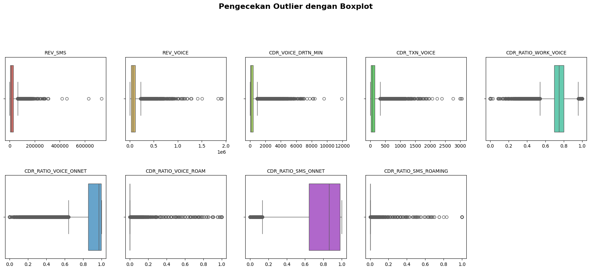
# Hitung jumlah observasi untuk setiap kelas
count_by_class = ds['REV_DATA'].value_counts()
print(f'"Jumlah observasi per kelas:"{count_by_class}' )
# Hitung persentase observasi untuk setiap kelas
percentage_by_class = ds['REV_DATA'].value_counts(normalize=True) * 100
print(f'"Persentase observasi per kelas:"{percentage_by_class}' )"Jumlah observasi per kelas:"REV_DATA
1 33362
0 16638
Name: count, dtype: int64
"Persentase observasi per kelas:"REV_DATA
1 66.724
0 33.276
Name: proportion, dtype: float64# Visualisasi
total = count_by_class.sum()
plt.figure(figsize=(7, 7))
labels = count_by_class.index.astype(str) # Label '0' dan '1'
# Fungsi untuk format label pada pie chart
def func(pct, allvalues):
absolute = int(np.round(pct/100.*total))
return f"{pct:.1f}%\n({absolute} user)"
# Membuat Pie Chart
wedges, texts, autotexts = plt.pie(
count_by_class,
autopct=lambda pct: func(pct, count_by_class),
labels=labels,
colors=['deeppink', 'lightskyblue'],
startangle=90,
wedgeprops={'edgecolor': 'black'}
)
# Menambahkan judul
plt.title('Proporsi Internet User', fontsize=14)
# Menambahkan legenda
custom_labels = {
'0': 'Non Internet User',
'1': 'Internet User'
}
legend_labels = [custom_labels[l] for l in labels]
plt.legend(wedges, legend_labels,
title="Status Pengguna", # Mengganti judul legenda juga lebih baik
loc="center left",
bbox_to_anchor=(1, 0, 0.5, 1))
# Menyesuaikan ukuran teks di dalam slice
plt.setp(autotexts, size=10, weight="bold", color="white")
plt.show()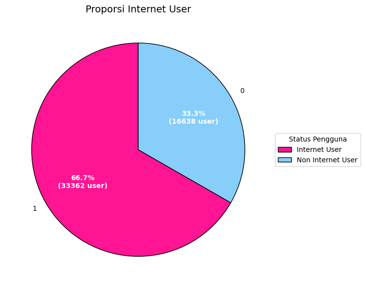
import seaborn as sns
import matplotlib.pyplot as plt
numerical_cols = ds.select_dtypes(include=np.number).columns.tolist()
features_only = [col for col in numerical_cols if col not in ['REV_DATA']]
# 2. Hitung Matriks Korelasi
correlation_matrix = ds[features_only].corr()
# 3. Visualisasi Heatmap
plt.figure(figsize=(10, 8))
sns.heatmap(
correlation_matrix,
annot=True, # Menampilkan nilai korelasi pada heatmap
fmt=".2f", # Format 2 angka desimal
cmap='coolwarm', # Pilihan warna (misalnya 'coolwarm' atau 'viridis')
linewidths=.5, # Garis antar sel
cbar_kws={'label': 'Koefisien Korelasi'}
)
plt.title('Heatmap Korelasi Antar Fitur', fontsize=16)
plt.show()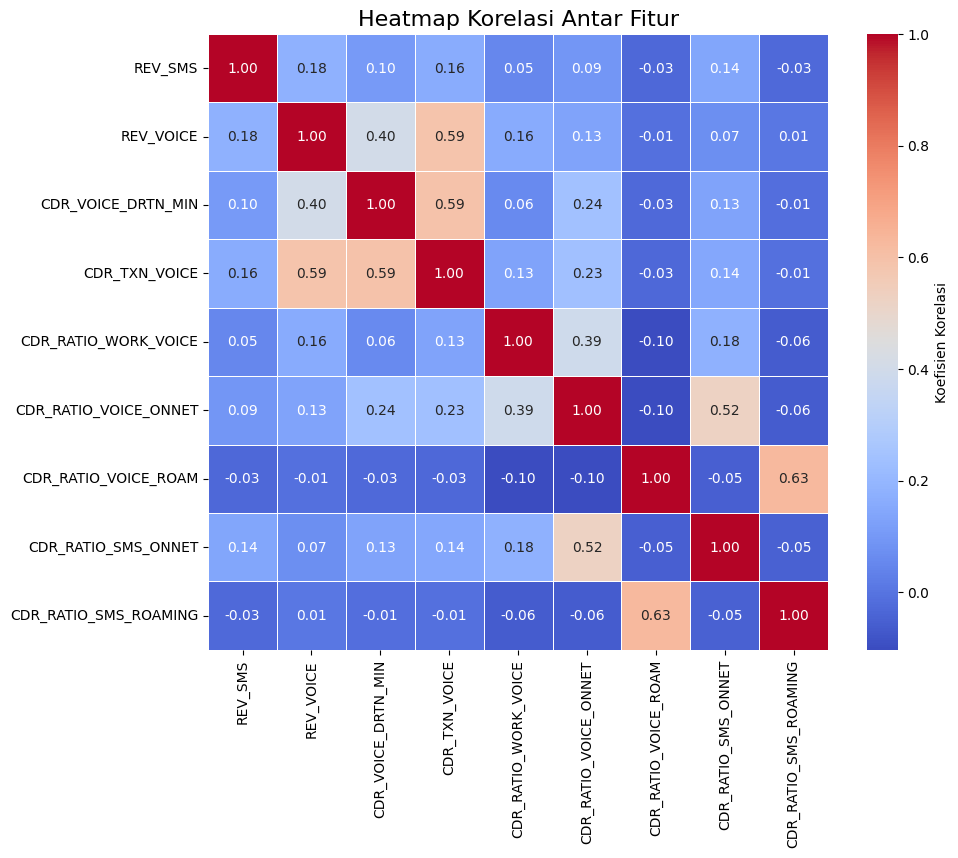
import matplotlib.pyplot as plt
import seaborn as sns
# Asumsikan list features_to_plot Anda berisi 9 nama kolom
features_to_plot = features_only
# Tentukan ukuran grid (misalnya 3 baris dan 3 kolom)
n_rows = 3
n_cols = 3
# Pastikan jumlah fitur sesuai dengan grid, jika tidak, atur ukurannya
if len(features_to_plot) > n_rows * n_cols:
print("Jumlah fitur melebihi ukuran grid. Sesuaikan n_rows atau n_cols.")
# Kita tetap akan menggunakan 9 fitur pertama untuk demonstrasi
features_to_plot = features_to_plot[:n_rows * n_cols]
# Membuat figure dan set of subplots (axes)
fig, axes = plt.subplots(n_rows, n_cols, figsize=(18, 15))
# fig: keseluruhan figure
# axes: array dari subplots (misalnya axes[0, 0], axes[0, 1], dst.)
plt.subplots_adjust(hspace=0.4, wspace=0.3) # Memberi jarak antar subplot
# Loop melalui setiap fitur dan setiap posisi di grid
for i, feature in enumerate(features_to_plot):
# Hitung posisi baris dan kolom di grid
row = i // n_cols
col = i % n_cols
# Membuat Box Plot pada subplot yang sesuai (axes[row, col])
sns.boxplot(
x='REV_DATA', # Variabel Kategorikal (Target)
y=feature, # Variabel Numerik (Fitur)
data=ds,
palette='Set2',
ax=axes[row, col]
)
# Pengaturan judul dan label untuk setiap subplot
axes[row, col].set_title(f'Distribusi {feature}', fontsize=12)
axes[row, col].set_xlabel('Target (0/1)')
axes[row, col].set_ylabel(feature)
# Beri judul keseluruhan figure
fig.suptitle('Box Plot Distribusi 9 Fitur Berdasarkan Kelas Target', fontsize=20, y=1.02)
plt.show()/tmp/ipython-input-1134331824.py:32: FutureWarning:
Passing `palette` without assigning `hue` is deprecated and will be removed in v0.14.0. Assign the `x` variable to `hue` and set `legend=False` for the same effect.
sns.boxplot(
/tmp/ipython-input-1134331824.py:32: FutureWarning:
Passing `palette` without assigning `hue` is deprecated and will be removed in v0.14.0. Assign the `x` variable to `hue` and set `legend=False` for the same effect.
sns.boxplot(
/tmp/ipython-input-1134331824.py:32: FutureWarning:
Passing `palette` without assigning `hue` is deprecated and will be removed in v0.14.0. Assign the `x` variable to `hue` and set `legend=False` for the same effect.
sns.boxplot(
/tmp/ipython-input-1134331824.py:32: FutureWarning:
Passing `palette` without assigning `hue` is deprecated and will be removed in v0.14.0. Assign the `x` variable to `hue` and set `legend=False` for the same effect.
sns.boxplot(
/tmp/ipython-input-1134331824.py:32: FutureWarning:
Passing `palette` without assigning `hue` is deprecated and will be removed in v0.14.0. Assign the `x` variable to `hue` and set `legend=False` for the same effect.
sns.boxplot(
/tmp/ipython-input-1134331824.py:32: FutureWarning:
Passing `palette` without assigning `hue` is deprecated and will be removed in v0.14.0. Assign the `x` variable to `hue` and set `legend=False` for the same effect.
sns.boxplot(
/tmp/ipython-input-1134331824.py:32: FutureWarning:
Passing `palette` without assigning `hue` is deprecated and will be removed in v0.14.0. Assign the `x` variable to `hue` and set `legend=False` for the same effect.
sns.boxplot(
/tmp/ipython-input-1134331824.py:32: FutureWarning:
Passing `palette` without assigning `hue` is deprecated and will be removed in v0.14.0. Assign the `x` variable to `hue` and set `legend=False` for the same effect.
sns.boxplot(
/tmp/ipython-input-1134331824.py:32: FutureWarning:
Passing `palette` without assigning `hue` is deprecated and will be removed in v0.14.0. Assign the `x` variable to `hue` and set `legend=False` for the same effect.
sns.boxplot(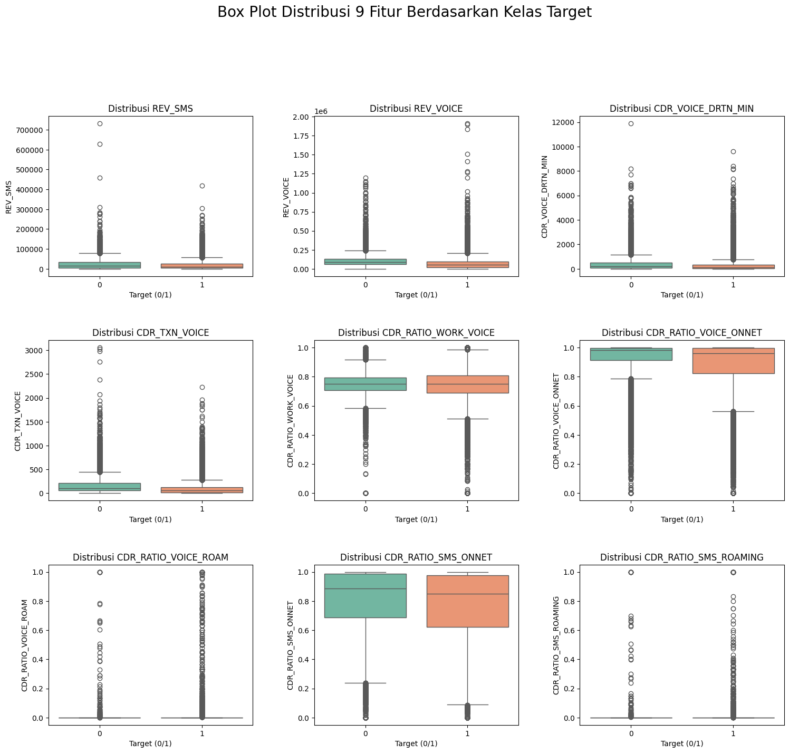
Preprocessing data
#pembagian x dan y
import pandas as pd
y = ds.iloc[:, 0]
X = ds.iloc[:, 1:10]
print(f"Bentuk (Shape) Fitur (X): {X.shape}")
print(f"Bentuk (Shape) Target (y): {y.shape}")Bentuk (Shape) Fitur (X): (50000, 9)
Bentuk (Shape) Target (y): (50000,)#pembagian data (20:80)
from sklearn.model_selection import train_test_split
X_train, X_test, y_train, y_test = train_test_split(
X, y,
test_size=0.2, # 20% data uji
random_state=42, # Untuk reproduktifitas
stratify=y # Memastikan rasio target 0/1 sama di train/test
)
print("\n✅ Hasil Pembagian Data (80:20):")
print(f"X_train (Data Latih Fitur): {X_train.shape}")
print(f"X_test (Data Uji Fitur): {X_test.shape}")
print(f"y_train (Data Latih Target): {y_train.shape}")
print(f"y_test (Data Uji Target): {y_test.shape}")
✅ Hasil Pembagian Data (80:20):
X_train (Data Latih Fitur): (40000, 9)
X_test (Data Uji Fitur): (10000, 9)
y_train (Data Latih Target): (40000,)
y_test (Data Uji Target): (10000,)# Mengecek multikolinieritas
from statsmodels.stats.outliers_influence import variance_inflation_factor
X=X_train
# VIF dataframe
vif_data = pd.DataFrame()
vif_data["feature"] = X.columns
# calculating VIF for each feature
vif_data["VIF"] = [variance_inflation_factor(X.values, i)
for i in range(len(X.columns))]
display(vif_data)| feature | VIF | |
|---|---|---|
| 0 | REV_SMS | 1.791571 |
| 1 | REV_VOICE | 3.217200 |
| 2 | CDR_VOICE_DRTN_MIN | 2.176283 |
| 3 | CDR_TXN_VOICE | 3.205612 |
| 4 | CDR_RATIO_WORK_VOICE | 20.993376 |
| 5 | CDR_RATIO_VOICE_ONNET | 31.215999 |
| 6 | CDR_RATIO_VOICE_ROAM | 1.786630 |
| 7 | CDR_RATIO_SMS_ONNET | 13.834322 |
| 8 | CDR_RATIO_SMS_ROAMING | 1.785317 |
# handle outlier
from sklearn.ensemble import IsolationForest
X=X_train
model_if = IsolationForest(contamination='auto', random_state=42)
X['outlier_flag'] = model_if.fit_predict(X)
# Filter: Ambil hanya data 'normal' (flag == 1)
X_cleaned = X[X['outlier_flag'] == 1].drop(columns=['outlier_flag'])
X_cleaned.head()| REV_SMS | REV_VOICE | CDR_VOICE_DRTN_MIN | CDR_TXN_VOICE | CDR_RATIO_WORK_VOICE | CDR_RATIO_VOICE_ONNET | CDR_RATIO_VOICE_ROAM | CDR_RATIO_SMS_ONNET | CDR_RATIO_SMS_ROAMING | |
|---|---|---|---|---|---|---|---|---|---|
| 30124 | 4637.500000 | 13932.500000 | 6.500000 | 15.000000 | 0.775000 | 0.950000 | 0.0 | 0.777273 | 0.0 |
| 14667 | 11400.000000 | 69215.666667 | 108.666667 | 86.666667 | 0.954737 | 0.941336 | 0.0 | 0.868590 | 0.0 |
| 26768 | 35877.666667 | 46961.000000 | 75.666667 | 79.666667 | 0.803317 | 1.000000 | 0.0 | 0.992968 | 0.0 |
| 14246 | 6825.000000 | 237041.666670 | 292.333333 | 107.666667 | 0.758412 | 0.846052 | 0.0 | 0.721724 | 0.0 |
| 1024 | 1500.000000 | 18633.000000 | 6.333333 | 8.666667 | 0.831502 | 0.691087 | 0.0 | 0.638889 | 0.0 |
X_cleaned.describe()| REV_SMS | REV_VOICE | CDR_VOICE_DRTN_MIN | CDR_TXN_VOICE | CDR_RATIO_WORK_VOICE | CDR_RATIO_VOICE_ONNET | CDR_RATIO_VOICE_ROAM | CDR_RATIO_SMS_ONNET | CDR_RATIO_SMS_ROAMING | |
|---|---|---|---|---|---|---|---|---|---|
| count | 36924.000000 | 36924.000000 | 36924.000000 | 36924.000000 | 36924.000000 | 36924.000000 | 36924.000000 | 36924.000000 | 36924.000000 |
| mean | 18837.398661 | 77373.310584 | 293.042041 | 108.819174 | 0.747232 | 0.904983 | 0.000158 | 0.789899 | 0.000042 |
| std | 19681.102945 | 61264.434771 | 403.657218 | 116.389361 | 0.101962 | 0.145782 | 0.003048 | 0.232248 | 0.001662 |
| min | 0.000000 | 0.000000 | 0.000000 | 1.000000 | 0.000000 | 0.000000 | 0.000000 | 0.000000 | 0.000000 |
| 25% | 4358.333333 | 32462.750000 | 43.333333 | 30.666667 | 0.700400 | 0.874807 | 0.000000 | 0.665816 | 0.000000 |
| 50% | 11850.833333 | 65208.833333 | 140.333333 | 70.333333 | 0.751562 | 0.973591 | 0.000000 | 0.871533 | 0.000000 |
| 75% | 26589.166667 | 104983.750000 | 372.000000 | 142.333333 | 0.803571 | 0.997669 | 0.000000 | 0.983333 | 0.000000 |
| max | 146300.000000 | 734572.333330 | 3639.333333 | 917.000000 | 1.000000 | 1.000000 | 0.200000 | 1.000000 | 0.200000 |
X_cleaned.info()<class 'pandas.core.frame.DataFrame'>
Index: 36924 entries, 30124 to 43131
Data columns (total 9 columns):
# Column Non-Null Count Dtype
--- ------ -------------- -----
0 REV_SMS 36924 non-null float64
1 REV_VOICE 36924 non-null float64
2 CDR_VOICE_DRTN_MIN 36924 non-null float64
3 CDR_TXN_VOICE 36924 non-null float64
4 CDR_RATIO_WORK_VOICE 36924 non-null float64
5 CDR_RATIO_VOICE_ONNET 36924 non-null float64
6 CDR_RATIO_VOICE_ROAM 36924 non-null float64
7 CDR_RATIO_SMS_ONNET 36924 non-null float64
8 CDR_RATIO_SMS_ROAMING 36924 non-null float64
dtypes: float64(9)
memory usage: 2.8 MB# Boxplot untuk mengecek outlier (dengan data yang sudah dibersihkan)
kolom_numerik = X_cleaned.describe().columns[:9]
# Buat palet
palette = sns.color_palette("hls", len(kolom_numerik))
plt.figure(figsize=(18, 18))
# Loop melalui kolom dan indeks
for i in enumerate(kolom_numerik):
# i[0] adalah indeks (0, 1, 2...), i[1] adalah nama kolom
plt.subplot(5, 5, i[0] + 1)
sns.boxplot(
x=X_cleaned[i[1]],
color=palette[i[0]]
)
plt.title(i[1], fontsize=10)
plt.xlabel('')
plt.suptitle("Pengecekan Outlier dengan Boxplot", y=1.02, fontsize=16, fontweight='bold')
plt.tight_layout(pad=3.0) # Menambahkan padding agar lebih rapi
plt.show()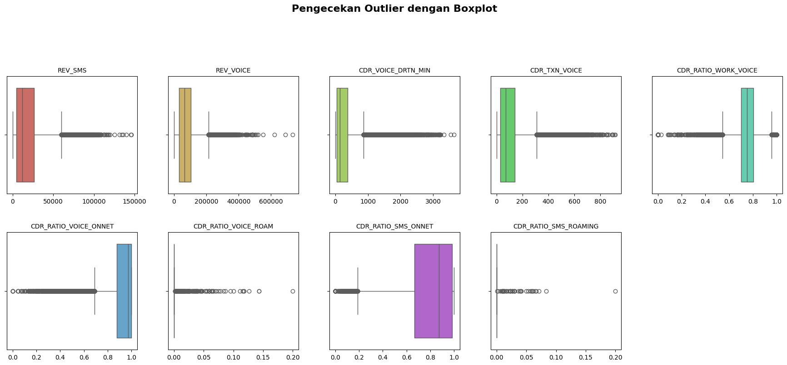
# Ambil INDEX baris yang tersisa di X_cleaned
indices_to_keep = X_cleaned.index
# Filter y_train menggunakan indeks tersebut
y_cleaned = y_train.loc[indices_to_keep]transformasi data
# Fit dan transform pada data training
#Scaling Fitur (Pada data X_train bersih)
from sklearn.preprocessing import StandardScaler, normalize
scaler = StandardScaler()
# Lakukan fit_transform pada data training yang sudah bersih
X_scaled = scaler.fit_transform(X_cleaned)
# Ubah kembali ke DataFrame
X_scaled = pd.DataFrame(X_scaled, columns=X_cleaned.columns)# Transform pada data testing
X_test_scaled = scaler.transform(X_test)
X_test_scaled = pd.DataFrame(X_test_scaled, columns=X_test.columns)Klasifikasi
- Validasi (hold-out validation)
from sklearn.neighbors import KNeighborsClassifier
from sklearn.metrics import accuracy_score, classification_report, confusion_matrix
from sklearn.model_selection import cross_val_score
from sklearn.decomposition import PCA
import matplotlib.pyplot as plt# 1. Menentukan Range k yang Akan Diuji
# =================================================================
# Menguji k dari 1 hingga 20.
k_values = range(1, 21)
akurasi = []
for k in k_values:
model = KNeighborsClassifier(n_neighbors=k)
model.fit(X_scaled, y_cleaned)
y_pred_k = model.predict(X_test_scaled)
akurasi.append(accuracy_score(y_test, y_pred_k))
print(list(zip(k_values, akurasi)))[(1, 0.6309), (2, 0.5951), (3, 0.6457), (4, 0.626), (5, 0.6484), (6, 0.641), (7, 0.6572), (8, 0.65), (9, 0.658), (10, 0.6537), (11, 0.6633), (12, 0.6554), (13, 0.6672), (14, 0.6593), (15, 0.6687), (16, 0.6666), (17, 0.6699), (18, 0.6664), (19, 0.6724), (20, 0.6692)]# Membuat plot antara k d
plt.figure(figsize=(8, 5))
plt.plot(k_values, akurasi, marker='o')
plt.title("Hubungan antara k dan Akurasi Model kNN")
plt.xlabel("Nilai k (jumlah tetangga)")
plt.ylabel("Akurasi")
plt.xticks(k_values)
plt.grid(True)
plt.show()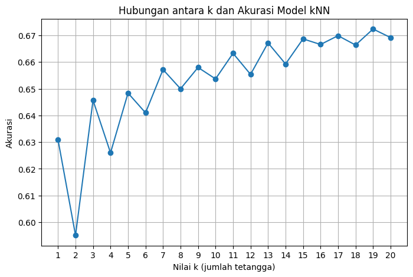
#membuat model dengan k terbaik yaitu k=19
knn = KNeighborsClassifier(n_neighbors=19)
knn.fit(X_scaled, y_cleaned)KNeighborsClassifier(n_neighbors=19)In a Jupyter environment, please rerun this cell to show the HTML representation or trust the notebook.
On GitHub, the HTML representation is unable to render, please try loading this page with nbviewer.org.
KNeighborsClassifier(n_neighbors=19)
y_pred = knn.predict(X_test_scaled)
print(y_pred)[1 1 1 ... 1 1 1]from sklearn.metrics import classification_report, confusion_matrix
print("Confusion Matrix:")
print(confusion_matrix(y_test, y_pred))
print("\nClassification Report:")
print(classification_report(y_test, y_pred))Confusion Matrix:
[[1184 2144]
[1132 5540]]
Classification Report:
precision recall f1-score support
0 0.51 0.36 0.42 3328
1 0.72 0.83 0.77 6672
accuracy 0.67 10000
macro avg 0.62 0.59 0.60 10000
weighted avg 0.65 0.67 0.65 10000
#sensitivity dan specifity
cm = confusion_matrix(y_test, y_pred)
TN = cm[0, 0]
FP = cm[0, 1]
FN = cm[1, 0]
TP = cm[1, 1]
# Perhitungan Metrik
Sensitivity = TP / (TP + FN)
Specificity = TN / (TN + FP)
print(f"Sensitivity (Recall): {Sensitivity:.4f}")
print(f"Specificity: {Specificity:.4f}")Sensitivity (Recall): 0.8303
Specificity: 0.3558# HITUNG AKURASI
accuracy = accuracy_score(y_test, y_pred)
# Tampilkan hasilnya
print(f"Nilai Akurasi: {accuracy:.4f}")
print(f"Persentase Akurasi: {accuracy * 100:.2f}%")Nilai Akurasi: 0.6724
Persentase Akurasi: 67.24%from sklearn.metrics import confusion_matrix, ConfusionMatrixDisplay
class_labels = ["Class 0 Non Internet User", "Class 1 Internet User"]
# --- 2. Hitung Confusion Matrix ---
cm = confusion_matrix(y_test, y_pred)
# --- 3. Visualisasi Plot ---
# Membuat objek display
disp = ConfusionMatrixDisplay(
confusion_matrix=cm,
display_labels=class_labels
)
# Plot matriks
# cmap=plt.cm.Blues memberikan skema warna biru untuk heatmap
disp.plot(cmap=plt.cm.Blues)
# Tambahkan judul dan tampilkan plot
plt.title("Confusion Matrix Plot")
plt.show()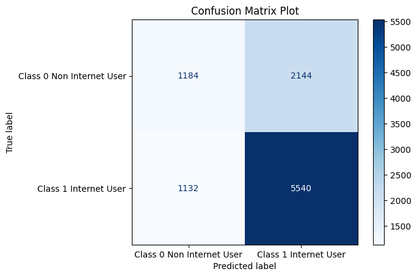
#kurva roc
y_prob = knn.predict_proba(X_test_scaled)[:, 1]from sklearn.metrics import roc_curve, auc
import matplotlib.pyplot as plt
# prediksi probabilitas kelas 1
y_prob = knn.predict_proba(X_test_scaled)[:, 1]
# hitung nilai fpr, tpr
fpr, tpr, thresholds = roc_curve(y_test, y_prob)
roc_auc = auc(fpr, tpr)
# plot
plt.figure()
plt.plot(fpr, tpr, label=f"ROC Curve (AUC = {roc_auc:.4f})")
plt.plot([0, 1], [0, 1], 'k--') # garis random
plt.xlabel("False Positive Rate")
plt.ylabel("True Positive Rate")
plt.title("ROC Curve - KNN")
plt.legend(loc="lower right")
plt.show()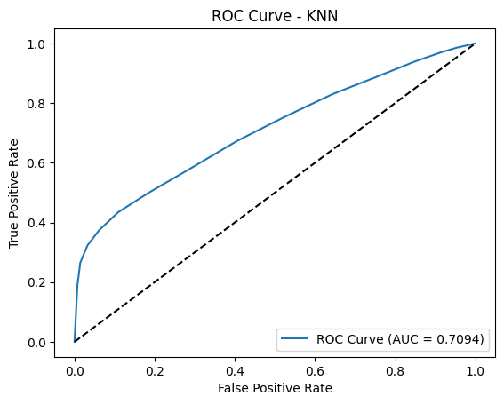
#kappa
from sklearn.metrics import cohen_kappa_score
kappa = cohen_kappa_score(y_test, y_pred_k)
print("Cohen's Kappa:", kappa)Cohen's Kappa: 0.2204708318471693- Validasi silang (cross validation)
k_values = range(1, 21)
cv_scores = [] # menyimpan skor rata-rata CV
for k in k_values:
model = KNeighborsClassifier(n_neighbors=k)
scores = cross_val_score(model, X_scaled, y_cleaned, cv=5) # 5-fold CV
cv_scores.append(scores.mean())
# tampilkan hasil k dan skor cv
for k, score in zip(k_values, cv_scores):
print(f"k={k}, CV Score={score:.4f}")
# cari k terbaik (CV score tertinggi)
best_k = k_values[np.argmax(cv_scores)]
print("\nK terbaik berdasarkan cross-validation:", best_k)k=1, CV Score=0.6344
k=2, CV Score=0.5994
k=3, CV Score=0.6495
k=4, CV Score=0.6322
k=5, CV Score=0.6538
k=6, CV Score=0.6432
k=7, CV Score=0.6597
k=8, CV Score=0.6527
k=9, CV Score=0.6641
k=10, CV Score=0.6587
k=11, CV Score=0.6667
k=12, CV Score=0.6630
k=13, CV Score=0.6687
k=14, CV Score=0.6646
k=15, CV Score=0.6710
k=16, CV Score=0.6663
k=17, CV Score=0.6730
k=18, CV Score=0.6679
k=19, CV Score=0.6744
k=20, CV Score=0.6701
K terbaik berdasarkan cross-validation: 19plt.figure(figsize=(8, 5))
plt.plot(k_values, cv_scores, marker='o',color='pink')
plt.title("Hubungan antara k dan CV_Score ")
plt.xlabel("Nilai k (jumlah tetangga)")
plt.ylabel("cv_score")
plt.xticks(k_values)
plt.grid(True)
plt.show()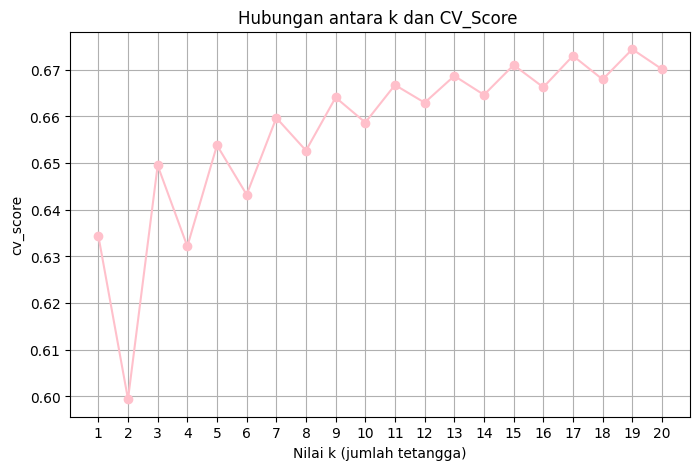
# latih model final menggunakan k terbaik
final_knn = KNeighborsClassifier(n_neighbors=best_k)
final_knn.fit(X_scaled, y_cleaned)KNeighborsClassifier(n_neighbors=19)In a Jupyter environment, please rerun this cell to show the HTML representation or trust the notebook.
On GitHub, the HTML representation is unable to render, please try loading this page with nbviewer.org.
KNeighborsClassifier(n_neighbors=19)
y_pred = final_knn.predict(X_test_scaled)
print(y_pred)[1 1 1 ... 1 1 1]from sklearn.metrics import classification_report, confusion_matrix
print("Confusion Matrix:")
print(confusion_matrix(y_test, y_pred))
print("\nClassification Report:")
print(classification_report(y_test, y_pred))Confusion Matrix:
[[1184 2144]
[1132 5540]]
Classification Report:
precision recall f1-score support
0 0.51 0.36 0.42 3328
1 0.72 0.83 0.77 6672
accuracy 0.67 10000
macro avg 0.62 0.59 0.60 10000
weighted avg 0.65 0.67 0.65 10000
accuracy = accuracy_score(y_test, y_pred)
# Tampilkan hasilnya
print(f"Nilai Akurasi: {accuracy:.4f}")
print(f"Persentase Akurasi: {accuracy * 100:.2f}%")Nilai Akurasi: 0.6724
Persentase Akurasi: 67.24%#sensitivity dan specifity
cm = confusion_matrix(y_test, y_pred)
TN = cm[0, 0]
FP = cm[0, 1]
FN = cm[1, 0]
TP = cm[1, 1]
# Perhitungan Metrik
Sensitivity = TP / (TP + FN)
Specificity = TN / (TN + FP)
print(f"Sensitivity (Recall): {Sensitivity:.4f}")
print(f"Specificity: {Specificity:.4f}")Sensitivity (Recall): 0.8303
Specificity: 0.3558from sklearn.metrics import confusion_matrix, ConfusionMatrixDisplay
class_labels = ["Class 0 Non Internet User", "Class 1 Internet User"]
# --- 2. Hitung Confusion Matrix ---
cm = confusion_matrix(y_test, y_pred)
# --- 3. Visualisasi Plot ---
# Membuat objek display
disp = ConfusionMatrixDisplay(
confusion_matrix=cm,
display_labels=class_labels
)
# Plot matriks
# cmap=plt.cm.Blues memberikan skema warna biru untuk heatmap
disp.plot(cmap=plt.cm.RdPu)
# Tambahkan judul dan tampilkan plot
plt.title("Confusion Matrix Plot")
plt.show()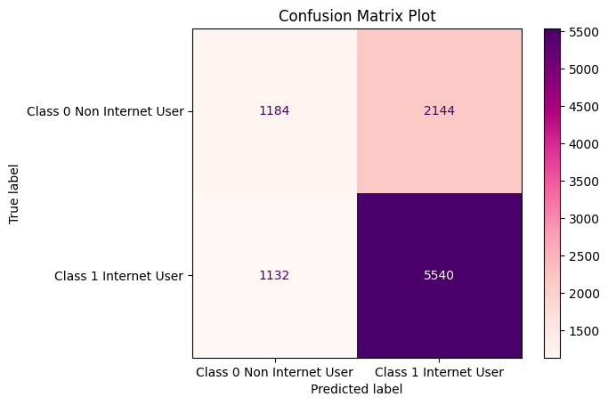
#kurva roc
y_prob = final_knn.predict_proba(X_test_scaled)[:, 1]from sklearn.metrics import roc_curve, auc
import matplotlib.pyplot as plt
# prediksi probabilitas kelas 1
y_prob = knn.predict_proba(X_test_scaled)[:, 1]
# hitung nilai fpr, tpr
fpr, tpr, thresholds = roc_curve(y_test, y_prob)
roc_auc = auc(fpr, tpr)
# plot
plt.figure()
plt.plot(fpr, tpr, color="deeppink", label=f"ROC Curve (AUC = {roc_auc:.4f})")
plt.plot([0, 1], [0, 1], 'k--') # garis random
plt.xlabel("False Positive Rate")
plt.ylabel("True Positive Rate")
plt.title("ROC Curve - KNN")
plt.legend(loc="lower right")
plt.show()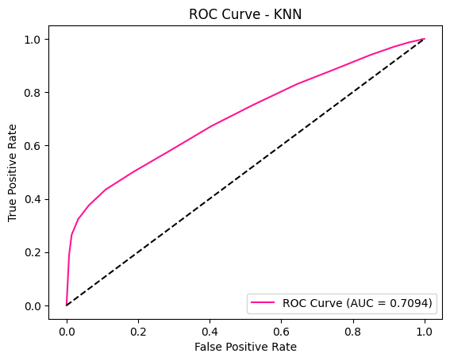
#kappa
from sklearn.metrics import cohen_kappa_score
kappa = cohen_kappa_score(y_test, y_pred_k)
print("Cohen's Kappa:", kappa)Cohen's Kappa: 0.2204708318471693